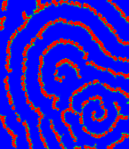

This animation illustrates the formation of spiral waves of cAMP from random inital "firing" of individual species of starved Dictyostelim . We employed an automata-like model for the discrete set of "bions" emitting the chemical, and diffusion equation for the concentration of chemical (for details, see I.Aranson, H.Levine, L.Tsimring, Genetic feedback governs cAMP spiral wave formation in Dyctiostelium (Proceedings of The National Academy of Sciences USA, 1996). Notice how initially disordered fluctuations of cAMP create many small spiral "seeds" which then compete among each other and eventually only few (or just one, as in this case) survive. This spiral competition can be also traced in a generic three component reaction-diffusion model (see I.Aranson, H.Levine, L.Tsimring, Spiral competition in three component excitable media)
To restart the animation just reload this page.
(animation using Netscape server push capability,
C code courtesy of
Paul Ramsey)
You can also watch regular MPEG animations of cAMP spiral formation and related amoebae aggregation.
Lev Tsimring